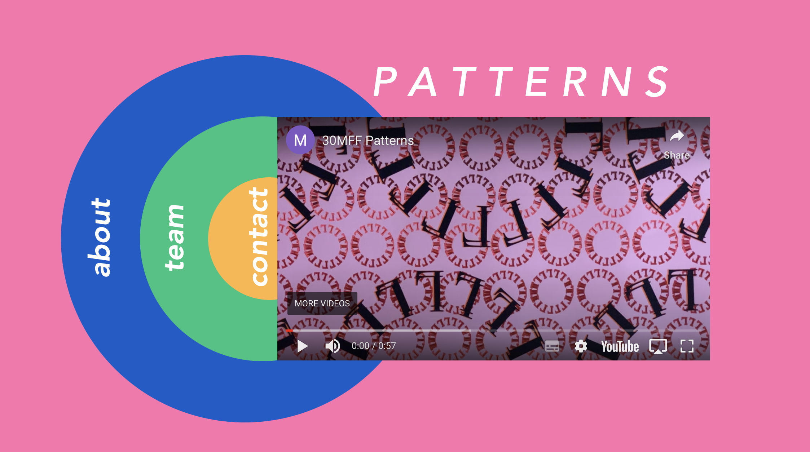

30MFF - PATTERNS
TEAM
Individual
The first project I worked on for class was the 30MFF. In this project I explored a lot with CSS positioning and letting my mind run free with layout and design. I felt the colourful circular interface really pulled the video idea in with the website to make a cohesive whole on patterns. My biggest takeaway from this project was that manipulating an SVG is a lot easier than attempting to position elements purely with CSS.